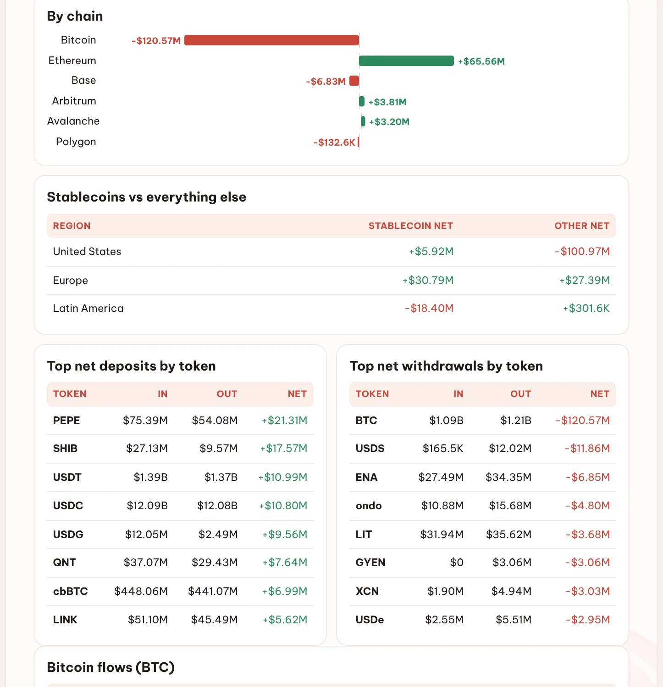
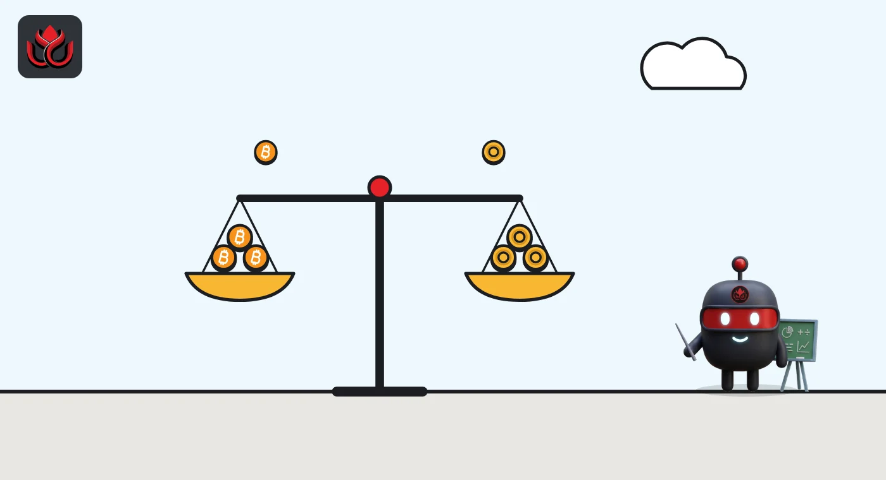

PEPE and SHIB flowed into US and European exchanges as $120 million in bitcoin left
DeepSea's weekly data shows Western exchanges nearly flat overall, at minus $54.98 million. Under the surface, memecoins were deposited, bitcoin was withdrawn, Kraken lost 1,526 BTC and one $399.78 million USDC transfer left Coinbase.
Key points
- US, European and Latin American exchanges ended October 26 to November 1, 2026 at a net minus $54.98 million on $32.77 billion of two-way volume, DeepSea shows.
- BTC led withdrawals at minus $120.57 million, with Kraken losing a net 1,526 BTC. PEPE (+$21.31 million) and SHIB (+$17.57 million) led deposits.
- The largest single transfer was $399.78 million in USDC withdrawn from Coinbase. DeepSea's data does not show why any of these moves happened.
 What DeepSea's data shows
What DeepSea's data shows
DeepSea's weekly report for October 26 to November 1, 2026 shows $16.36 billion deposited and $16.41 billion withdrawn at US, European and Latin American exchanges, a net of minus $54.98 million. The week before it was plus $64.91 million. Stablecoins made up 84% of volume.
The top net deposits were memecoins: PEPE +$21.31 million ($75.39 million in, $54.08 million out) and SHIB +$17.57 million ($27.13 million in, $9.57 million out). The top net withdrawal was BTC, minus $120.57 million ($1.09 billion in, $1.21 billion out).

Data: DeepSea (desea.io), checked November 3, 2026, 6:30 p.m. ET.
Who moved what
Kraken lost the most: net minus $99.54 million overall and minus 1,526 BTC (13,791 in, 15,317 out). Coinbase handled $12.77 billion each way and ended almost flat at minus $2.22 million. Bitpanda, in Europe, was the standout gainer at +$31.93 million ($54.26 million in, $22.33 million out), DeepSea shows.
By region, the US was minus $95.05 million and Europe plus $58.18 million. Latin America was minus $18.10 million.
Largest net token flows, US and European exchanges, October 26 to November 1
US$ million
Source: DeepSea weekly report, US & Europe flows by chain and token.
The $399.78 million transfer
The biggest single exchange transfer DeepSea logged worldwide this week was a $399.78 million USDC withdrawal from Coinbase on Ethereum at about 4:03 p.m. ET on October 28 (DeepSea lists Vietnam time; we converted it). The receiving wallet is visible on Etherscan but has no DeepSea label, so its owner is unknown.

Why it matters, and what we do not know
Coins sent to an exchange are often, though not always, coins someone may sell or trade. Coins leaving may be headed to storage or other venues. DeepSea's data shows the direction of these flows, not the reason, and it does not say who sent the PEPE and SHIB.
At 6:43 p.m. ET on November 3, CoinGecko showed PEPE at $0.00000489 (+2.96% in 24 hours), SHIB at $0.00000464 (+1.54%) and BTC at $77,760 (+1.32%).
LC Insight analysis
This section is our reading of the facts above, not a statement of fact.
- We think the contrast is notable: in the same week, PEPE posted a net withdrawal of $9.85 million from Asian exchanges while it posted net deposits in the West. DeepSea's data does not show who moved it or why.
- Memecoin deposits can come before selling, but they can also feed trading or market making. With no wallet labels, we would not draw a conclusion either way.
- The bitcoin outflow from Western venues ran opposite to Asia, where DeepSea shows BTC net deposits of $5.47 billion, mostly into Binance.
What's next
- Whether PEPE and SHIB deposits continue next week
- Kraken's BTC balance trend after minus 1,526 BTC
- Any DeepSea label for the wallet that received $399.78 million USDC
- Bitpanda flows after a +$31.93 million week
Disclaimer. This article is based on public information and the sources listed below as of the update time shown. It is for information only and is not investment, legal or tax advice. Figures may change as companies and authorities publish new data.
Sources
- DeepSea, Weekly Smart Money & Global Money Flows Report, October 26 to November 1, 2026 (US & Europe flows; checked November 3, 2026)
- Etherscan, $399.78 million USDC withdrawal from Coinbase (October 28, 2026)
- CoinGecko, Pepe (PEPE) price (checked 6:43 p.m. ET on November 3, 2026)
- CoinGecko, Shiba Inu (SHIB) price (checked 6:43 p.m. ET on November 3, 2026)
- CoinGecko, Bitcoin (BTC) price (checked 6:43 p.m. ET on November 3, 2026)